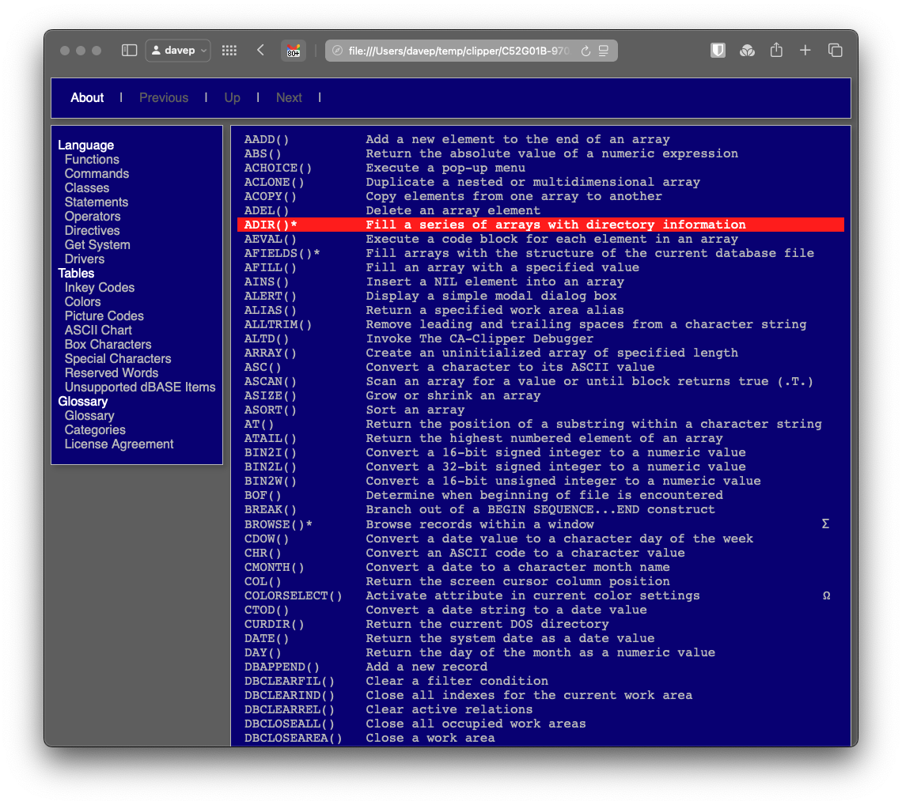

Guide
Introduction
ng2web is one in a long line of Norton
Guide tools I've written over the latest couple or so
decades. It is, in effect, a
replacement for w3ng and
ng2html.
As for what it does: it will take a Norton Guide file and turns the content into a collection of HTML pages, which you can then incorporate into a web site.
Installing
ng2web is a Python application and is distributed via
PyPI. It can be installed with tools such
as pipx:
pipx install ng2web
or uv:
uv tool install ng2web
Also, if you do have uv installed, you can simply use
uvx:
uvx ng2web
to run ng2web.
ng2web is also installable with Homebrew:
brew install davep/homebrew/ng2web
Command line options
The command is called ng2web and all command line options can be found
with:
ng2web --help
giving output like this:
usage: ng2web [-h] [-i] [-o OUTPUT] [-t TEMPLATES] [-v] guide
Convert a Norton Guide database to HTML documents
positional arguments:
guide The guide to convert
options:
-h, --help show this help message and exit
-i, --index Generate the first entry in the guide as index.html
-o, --output OUTPUT Directory where the output files will be created
-t, --templates TEMPLATES
Directory of template overrides
-v, --version Show version information
v1.0.1 (ngdb v0.12.0; Jinja2 v3.1.6)
The key options are:
--index
By default ng2web generates all pages with names that are prefixed with
the filename of the guide (minus the extension) and, for all pages relating
to short and long entries, including the byte offset of the entry in the
guide; this means that amongst the generated pages there's no obvious
starting location.
Add the --index switch to tell ng2web to always generate the first entry
in the guide as the file index.html.
--output
Use this switch to optionally specify the output directory for the generated HTML. By default all HTML files will be generated in the current directory.
--templates
Use this switch to optionally specify a location to look for templates that
will override the default templates (see the next section in
this document for details on how to use templates to control the output of
ng2web).
Templates
The output of ng2web is styled using a collection of templates. The
builtin templates are designed to give the output a bit of a classic Norton
Guide reader look.

The template engine used is Jinja. If you want to modify the templates, or create your own from scratch, the Jinja template designer documentation will be worth a read.
There are a number of templates that control each of the major types of content inside a Norton Guide.
The base template (base.html)
The base template is the base for the other templates that output a specific type of page.
{# -*- engine: jinja2 -*- #}
<!DOCTYPE html>
<html>
<head>
<meta name="viewport" content="width=device-width, initial-scale=1">
<meta charset="utf-8">
<meta name="generator" content="{{ generator }}">
<link rel="stylesheet" type="text/css" href="{{ stylesheet }}">
<title>{% block title %}{{ None|title }}{% endblock %}</title>
<meta name="decription" content="{{ None|title }}">
{% if previous_url %}<link rel="prev" href="{{ previous_url }}">{% endif %}
{% if next_url %}<link rel="next" href="{{ next_url }}">{% endif %}
{% block extraheaders %}{% endblock %}
</head>
<body>
<header>
<nav class="box">
<ul>
{% with prompt="About", link=about_url %}{% include "inc/nav-link.html" %}{% endwith %}
{% with prompt="Previous", link=previous_url %}{% include "inc/nav-link.html" %}{% endwith %}
{% with prompt="Up", link=up_url %}{% include "inc/nav-link.html" %}{% endwith %}
{% with prompt="Next", link=next_url %}{% include "inc/nav-link.html" %}{% endwith %}
</ul>
</nav>
</header>
<section>
<nav class="menu box">
<ul>
{%- for menu in guide.menus %}
<li>{{ menu }}</li>
<ul>
{% for option in menu -%}
<li><a href="{{ option|urlify }}">{{ option.text }}</a></li>
{% endfor %}
</ul>
{%- endfor %}
</ul>
</nav>
<article class="box">
{% block content %}{% endblock %}
</article>
</section>
</body>
</html>
{# base.html ends here #}
If you wish to change the look and feel of every page in the output, this is probably the template you want to override.
The about page template (about.html)
This is the template for the "about" page of the output; typically this is where the credits for the guide will be shown.
{# -*- engine: jinja2 -*- #}
{% extends "base.html" %}
{% block title %}About: {{ None|title }}{% endblock %}
{% block content %}
<h1>About {{ None|title }}</h1>
<hr />
<pre>
{% for line in guide.credits %}
{{ line|toHTML }}
{%- endfor %}
</pre>
{% endblock %}
{# about.html ends here #}
The base entry template (entry.html)
This is the template that both short and long entry templates build upon.
{# -*- engine: jinja2 -*- #}
{% extends "base.html" %}
{% block title %}{{ entry|title }}{% endblock %}
{% block content %}
{% block prelines %}{% endblock %}
{% block lines %}
<pre class="entry">
{%- for line in entry -%}
{%- if line is string -%}
<span class="line">{{ line|toHTML }}</span>
{%- else -%}
<a class="line" href="{{ line|urlify }}">{{ line.text|toHTML }}</a>
{%- endif -%}
<br />
{%- endfor -%}
</pre>
{% endblock %}
{% block postlines %}{% endblock %}
{% endblock %}
{# entry.html ends here #}
The short entry template (short.html)
This is the template for creating pages from short entries in the guide. Short entries typically have no "see also" section and also have lines that link elsewhere.
{# -*- engine: jinja2 -*- #}
{% extends "entry.html" %}
{# short.html ends here #}
The long entry template (long.html)
This is the template for creating pages from long entries in the guide. Long entries typically have an optional "see also" section and have lines that don't link anywhere else; the text content of a long entry is simply text, not links that go elsewhere.
{# -*- engine: jinja2 -*- #}
{% extends "entry.html" %}
{% block postlines %}
{% if entry.has_see_also %}
<nav class="seeAlso">
<ul>
<li>See Also:</li>
{% for see_also in entry.see_also %}
<li><a href="{{ see_also|urlify }}">{{ see_also.text }}</a></li>
{% endfor %}
</ul>
</nav>
{% endif %}
{% endblock %}
{# long.html ends here #}
Link navigation include (inc/nav-link.html)
This is a utility include template that is used by the base template to emit the navigation links that appear at the top of the page: the About, Previous, Up and Next links.
{# -*- engine: jinja2 -*- #}
<li>
{%- if link -%}
<a href="{{ link }}">{{ prompt }}</a>
{%- else -%}
<span>{{ prompt }}</span>
{%- endif -%}
</li>
{# nav-link.html ends here #}
The stylesheet template
The stylesheet for the site is generated using this template.
body {
font-family: sans-serif;
background: dimgray;
}
footer {
clear: both;
font-size: 70%;
color: silver;
padding: 1ex;
}
.box {
border: solid 1px silver;
box-shadow: 4px 4px 7px 0px rgba( 0, 0, 0, 0.2 );
background: navy;
color: silver;
}
a {
text-decoration: none;
color: inherit;
}
nav a:hover, nav a:hover *, article a:hover, article a:hover * {
background: red;
color: white;
}
header nav {
padding: 0;
margin-bottom: 1ex;
}
header nav ul {
padding-left: 1ex;
padding-top: 0;
padding-bottom: 0;
}
header nav ul li {
display: inline-block;
color: dimgray;
}
header nav ul li::after {
content: " |";
color: silver;
}
header nav a {
color: white;
padding-left: 1em;
padding-right: 1em;
}
header nav span {
padding-left: 1em;
padding-right: 1em;
}
section nav.menu {
float: left;
padding-right: 1ex;
margin-right: 1ex;
margin-bottom: 1ex;
}
section nav.menu ul {
list-style: none;
padding-left: 1ex;
}
section nav.menu > ul > li {
color: white;
}
section nav.menu > ul > li > ul > li {
color: silver;
}
section nav.menu a {
display: block;
}
nav.seeAlso {
border-top: solid 1px silver;
white-space: normal;
margin-top: 1ex;
}
nav.seeAlso ul {
padding: 0;
padding-left: 0.5em;
margin: 0;
margin-top: 0.5em;
}
nav.seeAlso ul li:first-child {
color: white;
}
nav.seeAlso ul li {
display: inline-block;
margin-right: 1em;
}
section article {
overflow: scroll;
font-family: 'Roboto Mono', monospace;
padding: 0.5em;
margin-bottom: 1ex;
}
section article pre {
font-family: inherit;
margin: 0;
padding: 0;
}
section article h1 {
color: white;
margin-bottom: 0;
}
section article ul {
list-style: none;
padding-left: 1ex;
white-space: normal;
}
section article span.ngb {
color: white;
}
section article span.ngu {
color: fuchsia;
}
section article a {
width: 100%;
display: inline-block;
}
{% for i, c in colours %}
span.bg{{ i }} {
background: {{ c }};
}
span.fg{{ i }} {
color: {{ c }};
}
{% endfor %}
@media screen and (max-width: 480px) {
.box {
box-shadow: none;
}
section nav.menu {
float: none;
margin: 0;
}
section article {
clear: both;
}
header nav {
padding: 0;
margin: 0;
text-align: center;
}
header nav ul, header nav ul a, header nav ul span {
padding: 0;
}
header nav ul li {
padding-left: 0.5em;
padding-right: 0.5em;
display: inline;
}
header nav ul li::after {
content: "";
}
header nav ul li:nth-child(2):after {
content: "\\A";
white-space: pre;
}
section nav.menu li {
display: inline-block;
}
section nav.menu a {
display: inline-block;
font-size: 80%;
}
section nav.menu ul ul li::after {
content: " |";
color: white;
}
section article {
font-size: 80%;
}
}
/* base.css ends here */
As you'll see: the bulk of this file is just static CSS; the only part
making use of templating being the span foreground and background colour
utility classes; the styles being .bg0 through .bg15 and .fg0 through
.fg15. By default the expansion is a selection of web colours that best
match the colours common in text modes on PC/DOS systems.
The default selection is:
- black
- navy
- green
- teal
- maroon
- purple
- olive
- silver
- gray
- blue
- lime
- aqua
- red
- fuchsia
- yellow
- white
Overriding templates
Custom template locations
By default, when a template is needed, ng2web will look in the following
locations, in the following order. Once a template is found that one is
used.
- The directory provided with the
--templatesswitch. ./templates/, below the current working directory, if it exists.ng2web's own default templates.
Tip
You only need to make a copy of a template you actually want to change. Overriding one template doesn't mean you need to make a copy of all of them. Each template is individually looked for using these rules.
Global values
The following global variables are available in the templates:
generator
The generator name for ng2web, this will include the version number of
ng2web and of ngdb (the library that ng2web is built
on).
An example looks like:
ng2web v0.1.1 (ngdb v0.12.0)
guide
A reference to the guide object that is being used to read the Norton Guide
file. This allows access to any of the properties and methods of
ngdb.NortonGuide.
Warning
It's best to restrict use of this to read-only properties; calling anything that may change the state of the underlying guide object could cause unexpected results.
about_url
The URL for the about page that will be generated.
stylesheet
The name of the stylesheet that will be generated.
Available filters
The following filters are made available in the templates:
urlify
Takes a particular linked option within a guide and turns it into a web link. Most often used when generating links in entries; for example:
<a class="line" href="{{ line|urlify }}">{{ line.text|toHTML }}</a>
toHTML
Takes some text and makes it safe to use in a HTML document. This can also be seen being used in the example given above.
title
Takes a guide entry and emits a suitable title for it. For example:
{% block title %}{{ entry|title }}{% endblock %}
The title will be rendered as path of sorts, which will include the title of the guide, the title of the menu the entry relates to, and the prompt from the menu that the entry relates to. For example:
MrDebug for CA-Clipper Ver 1.20.147ß » Reference » Menus
Tip
As a special case, if you pass None as the entry title will simply
output the title of the guide.
Getting help
If you need some help using ng2web, or have ideas for improvements, please
feel free to drop by the
discussions and ask or
suggest. If you believe you've found a bug please feel free to raise an
issue.